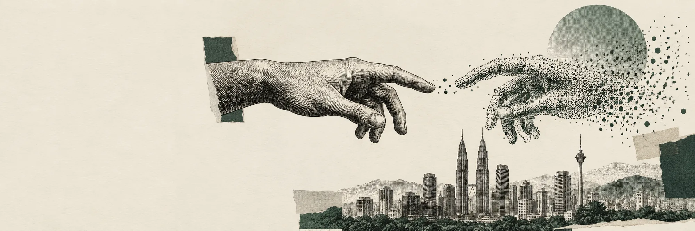
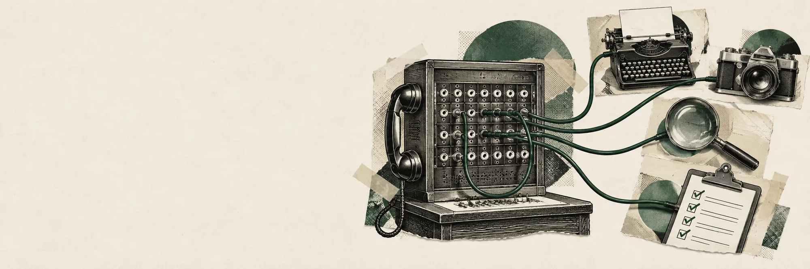
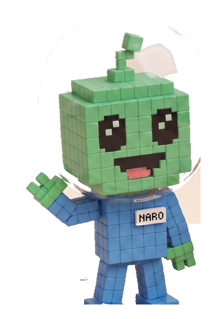

AI engineering · agents and LLM systems · Kuala Lumpur
I build AI agents that ship to production.
IT Associate in Data & AI DevOps at Maxis, where I design and run multi-agent systems on Google Cloud.

Who
- NowIT Associate, Data & AI DevOpsMaxis Graduate Program
- In productionMulti-agent analyticsVertex AI, BigQuery, Cloud Run
- Kaggle33rd of 356Poker fraud detection, top 10%
- UKMFirst Class, 3.88Dean's List, 8 of 8 semesters
Proof
Selected work


Also built
Self-improving agent architecture
A cross-user policy store in Firestore, kept apart from per-user memory, so what one conversation teaches every later one knows, with no added latency per turn.
AI bundle business case
The financial model and pitch for bundling an AI subscription into Hotlink youth plans at Maxis. It caught a rebate modelling error that changed the strategy.
Rebate-assignment automation
Automated the rebate process for newly launched Maxis plans, cutting manual work before campaigns.
FluentAI
An English fluency companion that adapts difficulty from your mistakes instead of correcting every sentence.
fitmu
An iPhone and Apple Watch weight-loss coach that understands Malaysian food.
Method
How I build with AI agents
I run AI coding agents the way I would run a small team: a clear spec, the right model for each job, and nothing counts as done until it has actually run.

- 01
Spec before code
Every task starts as checks that must pass: a command and the output it should give. Agents build against those checks, not against a vague goal.
- 02
The right model for each job
Fast models search and take inventory, a strong model builds, and a fresh reviewer with none of the builder's assumptions tries to prove the work is not finished.
- 03
Done means it ran
Tests, builds, screenshots and real requests. "It should work" never counts, and every agent's claim is re-checked before anything merges.
- 04
Guardrails in code, not prompts
Rules that matter, such as spending caps on paid AI tools, are enforced by hooks that block the action outright. A prompt can be ignored; a hook cannot.
I also build the tools my agents use: MCP servers that connect them to image and video tools, and a self-hosted gateway for reaching other model providers.
Experience
Jan 2026 to now
Maxis · IT Associate, Data & AI DevOps
Graduate Program. Building and running the production data agents in the reel above.
2025
Maxis · Consumer Business Associate
Go-to-market for Maxis and Hotlink campaigns, then pricing and subsidy analysis for Mobile Product. Automated rebate assignment for new plans.
2024
Deloitte Consulting SEA · AI & Data intern
Generative AI document automation on Microsoft Fabric, and business analysis for a Tableau dashboard migration.
2023 to 2024
PJBUMI Heavy Engineering · MLOps apprentice
Computer-vision inspection models for oil and gas clients.
Dec 2024
UKM · BSc Computer Science
First Class Honours, CGPA 3.88. Dean's List in all eight semesters.
- 3.88CGPA, First Class Honours
- 8 / 8Semesters on the Dean's List
- Top 10%Kaggle, 33rd of 356 teams
- ScholarYayasan Peneraju, 2024
- IBMAI Engineering certificate
- GoogleData Analytics certificate
Contact
Need agents that hold up in production?
Open to AI engineering roles, and select freelance work through TERAS TECH.
